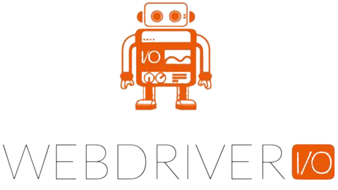

Automation



Computer Systems Engineering with more than eight years of work experience, my human, academic and vocational training has been focused on the development and implementation of useful proposals in analysis, design, improving internal processes, quality assurance on software products and management projects. leadership skills to improve performance and camaraderie on QA teams. I am a positive person, creative, easy to adapt to new work teams, with a strong level of commitment and responsibility to my duties, good interpersonal skills, ability to work in teams under high pressure and goal oriented.